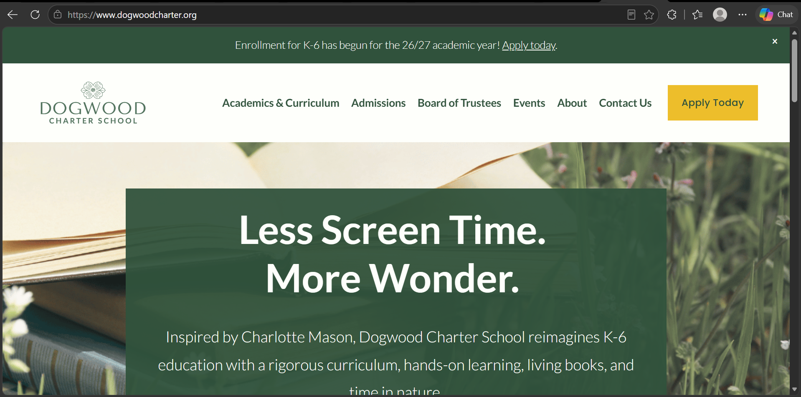

Overview of the Website
- URL of the website
- https://www.dogwoodcharter.org/
- Name of the website
- Dogwood Charter Schools
- Target audience
- The main audience is parents and guardians in the Bethel Park, PA area who are looking for a public school for their children in kindergarten through sixth grade. The home page speaks directly to parents who want less screen time, more time in nature, and a hands-on style of learning. The enrollment banner and the "Apply Today" button show that the school wants these families to apply. A smaller audience is people interested in working at the school, since the site has a Careers page, and the Board of Trustees and Events pages serve the wider school community.
Screenshot of the Website

How Is the Site Organized?
Hierarchical. The site has a clear home page, and the main menu links to the major sections (Academics & Curriculum, Admissions, Board of Trustees, Events, About, Contact Us). The About menu holds smaller pages under it, like About DCS and Careers. It’s shallow, so most pages are one or two clicks from the home page. It isn’t linear because there’s no required order to view the pages, and it isn’t random because the menu gives a clear path to every section.
Which CRAP Design Principle Does the Site Use?
Repetition: “Apply Today” appears in the banner, the menu, and the home page, and the same dark green is used in the logo, banner, and headline box.
Accessibility Checker Audit Score
The audit score from the Accessibility Checker was [66].
Usability of the Site
Effectiveness
The site helps users complete actions accurately. The task I tried was finding out how to apply to the school. The "Apply today" link in the top banner, the yellow "Apply Today" button in the menu, and the button on the home page all lead to the Admissions page, so I did not have to guess where to go. I also looked for the school's address, and it is listed at the bottom of the home page.
Efficiency
Users can perform tasks quickly. It took one click from the home page to reach the Admissions page. The address is on the home page, so it takes no clicks, and the Contact Us page is one click away from the menu. The menu has only seven items, so it is easy to scan.
Engagement
The site is pleasant to use and fits an elementary school. The dark green color, the photo of an open book in the grass, and the headline "Less Screen Time. More Wonder." match the school's focus on nature and hands-on learning. The text is large and easy to read, and the icons in "The Dogwood Charter School Difference" section are friendly and simple. The site speaks to parents, who are the main audience, in plain language without being too formal.
Recommendation to Improve the Website
One way to improve the website is to move "Board of Trustees" under the "About" menu. Right now the main menu has seven items, and Board of Trustees sits at the same level as Admissions and Academics & Curriculum. Parents care most about admissions, academics, and events, while the board is more useful to the school community. Moving it under "About" would shorten the main menu and make it easier to scan. It would also follow the module's advice to avoid overwhelming users with too many choices at once.